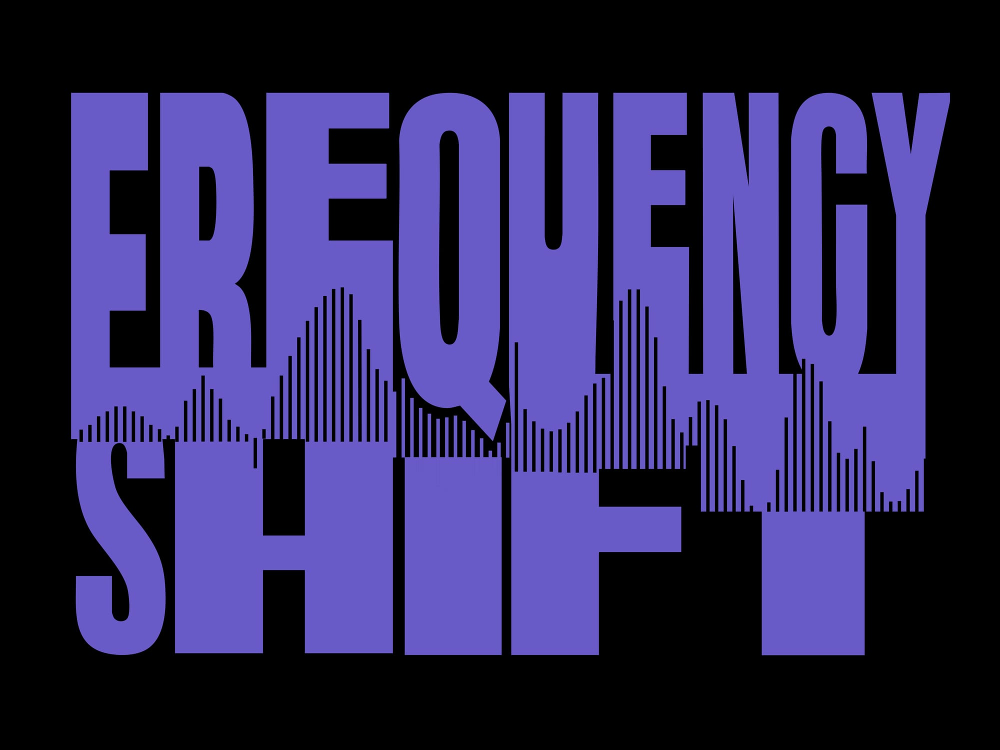
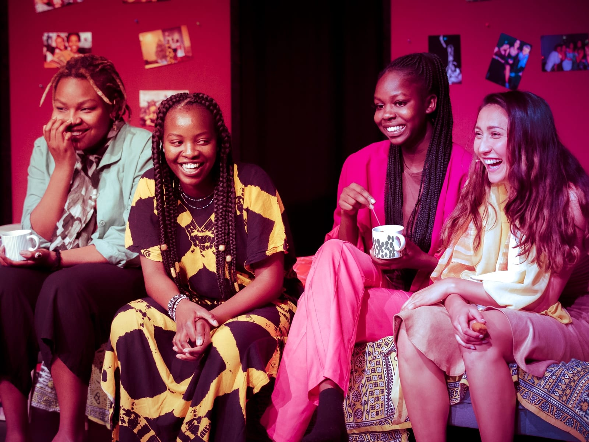
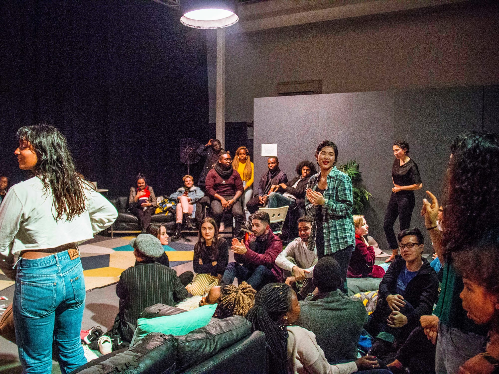

Art & Culture Projects

2025 - 2026
Project Coordinator
Artist Management / Development
2023
Creative consultant

2019
Multi-disciplinary performance blending movement, soundscapes, and visuals to explore cultural assimilation through the voices of four women.

2018
An audio-visual and immersive performance exploring diverse perspectives on home. Creator & Producer: Daisy Nduta.